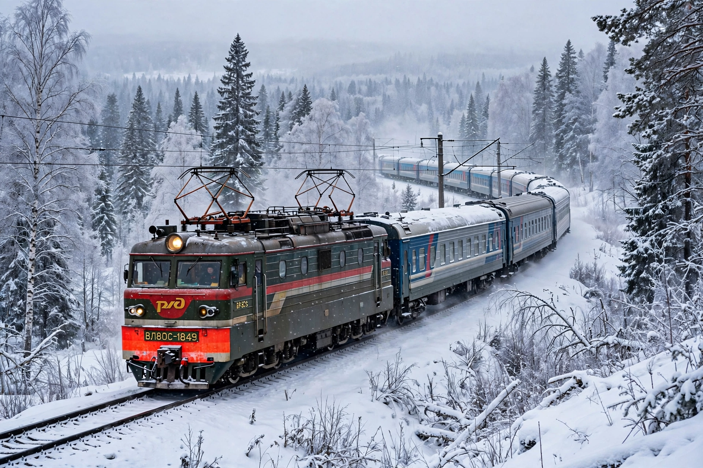

Trans-Siberian Railway
From Wikipedia, the free encyclopedia

A train on the Trans-Siberian Railway.The Trans-Siberian Railway is a railway network connecting European Russia with the Russian Far East, running about 9,289 km (5,772 miles) from Moscow to Vladivostok — the longest railway line in the world. Built between 1891 and 1916 under the direction of Sergei Witte and others, it transformed Siberia\'s settlement and remains a vital freight artery between Asia and Europe.
Construction
Work began in 1891 from both ends, using soldier, convict and hired labour in severe conditions. A gap around Lake Baikal was long crossed by ferry until the Circum-Baikal section opened in 1904–05; the all-Russian route via the Amur River was completed in 1916.
The journey
A through passenger train takes about seven days between Moscow and Vladivostok, crossing eight time zones and passing through Yekaterinburg, Novosibirsk, Irkutsk and Khabarovsk. Branches include the Trans-Mongolian line to Beijing via Ulaanbaatar and the Trans-Manchurian route.
Today
The line is fully electrified and heavily used for freight, including container traffic between China and Europe. Tourism trains such as the Rossiya and private luxury services like the Golden Eagle cater to travellers making the classic journey.